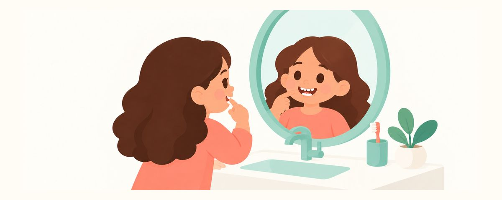

牙医审核学龄前（3–6 岁）
孩子牙齿发黑、发黄：色素沉着和变色的常见原因
孩子的牙齿变了颜色，原因有很多。这里整理了牙龈附近的黑色色素沉着、补铁剂染色、摔伤后变色、看起来偏黄的恒牙、白色斑点的区别，以及不该在家做的美白。
要点速览
- 牙龈附近的黑色色素沉着没有危害，可以清洁掉
- 不在家美白，竹炭和小苏打也不行
- 牙龈肿、化脓、疼痛或发烧？马上看牙医
给孩子刷牙时，看到牙上有黑点或黑线，家长第一反应往往是担心蛀牙。牙齿变成灰色，或者新长的恒牙看起来特别黄，也一样让人担心。孩子牙齿变色的原因有很多，大多数去牙科检查就能解决。这篇文章整理了常见原因和在家该做的事。
牙齿变色的常见原因
是蛀牙还是色素沉着，在家很难分辨。不过了解常见原因，可以少受些惊吓，听牙医解释时也更容易理解。
- 牙龈附近的黑色色素沉着：沿着靠近牙龈的牙颈部，排列着黑点或黑线。它和口腔细菌有关，没有危害。牙科清洁就能去掉，但可能会再出现。有报告称，这样的孩子往往蛀牙反而较少。不过，色素沉着是否能预防蛀牙，目前还不清楚。
- 补铁剂染色：补铁剂等所含的金属成分让牙齿表面染了色。这是附着在表面的色素，在牙科比较容易去除。
- 摔伤后变色：乳牙受伤后，可能会变成灰色、粉色或黄色。有的会在几周到几个月内慢慢变淡，单纯变色也不会因此做根管治疗。不过需要观察后续变化。
- 恒牙看起来更黄：乳牙和恒牙的牙釉质（牙齿表层）厚度不同。所以换牙期间，在同一张嘴里，新长的恒牙看起来可能比旁边的乳牙更黄。
- 白色斑点或条纹：可能是氟斑牙，是在恒牙发育期间（大约8岁以前）吞下过多的氟造成的。大多数都很轻微。
过去人们常误以为黑色色素沉着是没刷好牙造成的。现在认为它没有危害，只是影响美观。这不是家长的错，请放心。
在家不要刮，这样做
- 黑点不要刮，也不要使劲擦。用指甲或工具去刮，可能会伤到牙齿表面或牙龈。交给牙科清洁。
- 定期检查时做护理。黑色色素沉着可能会再出现，每次检查时请牙医看看，需要的话再清洁。
- 补铁糖浆喂到舌头靠后的位置。用吸管或喂药器喂到舌头后部，就不太会沾到门牙。喂完后让孩子喝点水或刷刷牙。
- 摔倒后牙齿变色，就记录下来。牙医会拍照，持续观察。在家也记下日期、拍张照片，方便对比变化。
- 含氟牙膏只挤规定的量。3岁以下用米粒大小，3–6岁用豌豆大小。由家长来挤，刷完让孩子吐掉。
乳牙和恒牙混在一起的时期，如果整体美白，等恒牙全部长齐后，颜色可能会对不上。如果在意孩子的牙齿颜色，先去牙科查明原因才是正确的顺序。
常见问题
有黑点就是蛀牙吗？
沿着牙龈排成一排的黑点，可能是没有危害的色素沉着。但蛀牙也可能看起来是褐色或黑色的，在家很难分辨。请到牙科确认。
清洁过了，又长出来了。
黑色色素沉着可能会再出现。这不是孩子的错，也没有危害。每次定期检查时看一看，需要的话再清洁就好。
新长的门牙特别黄。
乳牙和恒牙的牙釉质厚度不同，换牙期间颜色看起来会不一样。大多数是正常的，如果担心颜色，请问问牙医是否在正常范围内。
吃补铁剂，牙齿会一直发黑吗？
补铁剂染色是附着在表面的，在牙科比较容易去除。喂到舌头靠后的位置，喂完用清水或刷牙收尾，会有帮助。是否停用补铁剂，请咨询儿科医生。
这些情况请看牙医
- 变色牙齿周围的牙龈肿起来，或者出现流脓的小口时
- 孩子说变色的牙疼，或者发烧时（请马上去）
- 牙齿上新出现黑点或褐色污渍时
- 摔倒后牙齿颜色变了时
- 恒牙特别黄，或者出现白色斑点、条纹让人担心时
在合适的时候收到提醒
在牙齿日历应用中输入孩子的出生日期（或预产期），这些文章就会在需要的时候以提醒的形式送达。免费使用，无需注册。
参考来源
- AAPD · Policy on the Use of Dental Bleaching for Child and Adolescent Patients (2023)
- Children (Basel) · Association Between Chromogenic Black Stain and Dental Caries in Children: Systematic Review and Meta-Analysis (2025)
- IADT · Guidelines for the management of traumatic dental injuries: 3. Injuries in the primary dentition (2020)
- ADA · Charcoal and charcoal-based dentifrices: A literature review (JADA) (2017)
本应用中的信息仅供一般科普教育之用，不能替代专业的牙科诊疗。关于孩子的具体情况，请咨询牙医。